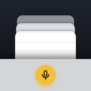

개인정보 처리방침
마따 (iPhone 앱)
마따는 개인정보를 모으지 않도록 만들었어요. 마따에는 서버가 없고, 광고나 사용 분석 도구도 없어요. 아래에 실제로 어떻게 동작하는지 그대로 적었어요.
메모
메모는 사용자의 iPhone 안에만 저장돼요. 마따는 메모를 다른 곳으로 보내거나 모으지 않아요. 개발자도 사용자의 메모를 볼 수 없어요.
목소리와 받아쓰기
마따는 목소리를 저장하지 않아요. 앱 안의 마이크 버튼으로 받아쓸 때는 가능하면 iPhone 안에서만 처리해요. 기기가 이를 지원하지 않으면 Apple의 음성 인식 서버를 거칠 수 있고, 이때는 Apple의 개인정보 처리방침이 적용돼요.
단축어(뒷면 탭)와 Siri로 말한 내용은 iOS가 받아써서 마따에 글자만 전해 줘요. 이 과정도 Apple의 개인정보 처리방침을 따라요.
마이크와 음성 인식 권한은 앱 안의 마이크 버튼을 쓸 때만 사용해요.
화면 밖에 보이는 내용
잠금화면 위젯과 알림에는 메모 내용이 보일 수 있어요. 원하지 않으면 위젯을 빼거나, iOS 설정에서 알림 미리 보기를 끌 수 있어요.
알림
"곧 사라지는 메모"와 "매일 확인" 알림은 iPhone 안에서 예약되는 알림이에요. 알림을 위해 정보를 밖으로 보내지 않아요.
백업과 삭제
메모는 iPhone 백업(iCloud 백업 포함)에 함께 담길 수 있어요. 앱을 지우면 메모도 함께 지워져요. 메모가 20개를 넘으면 오래된 메모는 이틀 뒤 저절로 지워져요.
의견 보내기
설정 > 도움말 > "의견 보내기"는 구글 설문지를 Safari에서 열어요. 이름이나 연락처는 묻지 않아요. 앱은 설문지의 앱 버전과 iOS 버전 칸만 미리 채우고, 사용자가 직접 "제출"을 눌러야 보내져요. 보낸 내용은 앱을 고치는 데만 쓰고, 구글 설문지(Google Forms)에 보관돼요.
어린이
마따는 누구의 개인정보도 모으지 않으므로 어린이의 개인정보도 모으지 않아요.
바뀔 때
나중에 광고나 분석 도구처럼 정보를 다루는 기능이 생기면, 이 페이지와 앱 업데이트 안내에서 먼저 알려 드릴게요.
시행일: 2026년 10월 5일 · 개발자: 임채민 (killerwhalee) · 문의: matda@killerwhalee.com